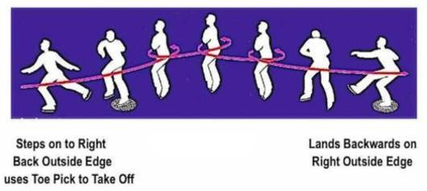
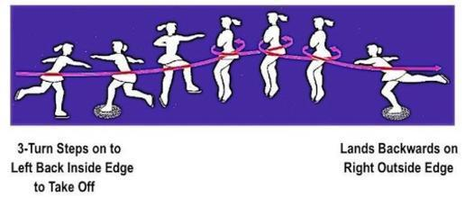
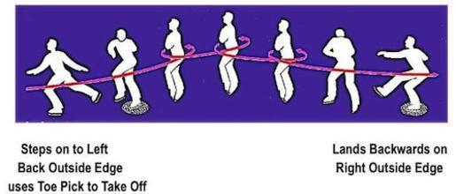

What are toe jumps?
Toe loop jump starts from the back outside edge and lands on the back outside edge of the same foot. It is similar to a loop jump. (see edge jump)
The flip jumps take off from the back inside edge and land with the opposite foot.
A Lutz Jump, which calls for takeoff from the back outside edge and landing on the opposite foot. The only difference between a Lutz and a flip is the edge the skater is taking off from. Some skaters "cheat" and take off from the wrong edge when attempting to do a Lutz. What also makes the Lutz difficult is that it's counter-rotated, meaning that the rotation of the jump is the opposite of its entry.